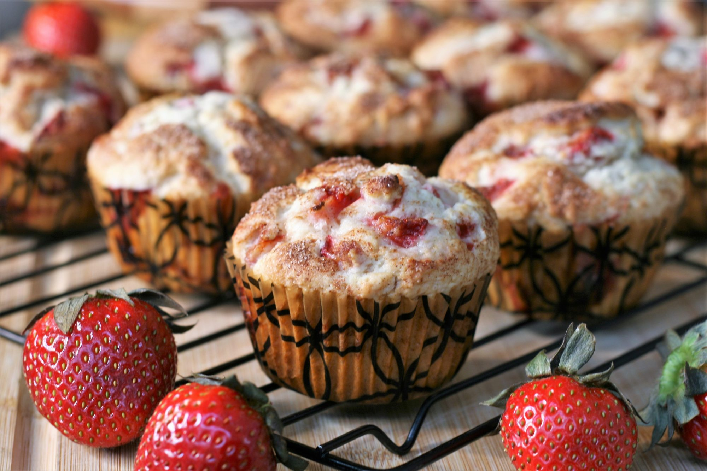

Strawberry Muffins

Description
by Jen Pretty, from allrecipes.com
Ingredients
- ¾ cup white sugar
- ½ cup butter, softened
- 1 egg
- 2 cups all-purpose flour
- 2 teaspoons baking powder
- ½ teaspoon salt
- ½ cup milk
- ½ teaspoon vanilla extract
- 1½ cups chopped strawberries
- 3 teaspoons white sugar
- ½ teaspoon ground cinnamon
Steps
- Step 1
- Preheat the oven to 400 degrees F (200 degrees C).
- Grease a 12-cup muffin tin or line with paper liners.
- Step 2
- Beat 3/4 cup sugar and butter together in a mixing bowl using an electric mixer until creamy.
- Add egg and mix well.
- Step 3
- Sift flour, baking powder, and salt together in a small bowl.
- Add flour mixture and milk alternately to butter mixture until combined.
- Stir in vanilla extract.
- Gently stir in strawberries.
- Step 4
- Spoon batter into the prepared muffin cups.
- Combine 3 teaspoons sugar and cinnamon in a small bowl and sprinkle over tops of muffins.
- Step 5
- Bake in the preheated oven until a toothpick inserted into the center of a muffin comes out clean, 20 to 25 minutes.